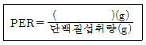
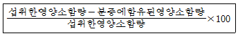
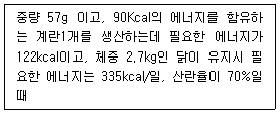

축산산업기사 (2007-09-02 기출문제)
1과목: 가축번식 육종학
1. 일반적으로 돼지가 첫 발정시 몇 개의 난자를 배란하는가?
- 2 ~ 4개
- 4 ~ 6개
- 6 ~ 8개
- 8 ~10개
(정답률: 54%)

2. 소, 돼지, 면양 등에 있어서 성성숙을 지연시키는 것은?
- 누진교배
- 근친교배
- 잡종교배
- 이계교배
(정답률: 89%)
3. 돼지에 있어서 근친교배를 시킬 경우 어떤 현상이 나타나는가?
- 번식 능률이 우수해진다.
- 성장률이 좋아진다.
- 자손의 능력이 향상된다.
- 산자수가 적어진다.
(정답률: 86%)
4. 닭의 산육능력과 가장 관계 깊은 요소는?
- 성장속도
- 부화율
- 휴산성
- 산란지속성
(정답률: 73%)
5. 초년도 산란수를 지배하는 요소와 관계 없는 것은?
- 동기 휴산성
- 산란지속성
- 산란강도
- 사료요구율
(정답률: 85%)
6. 가축에서 흔히 일어날 수 있는 근친교배는?
- 누진교배
- 전형매교배
- 계통간교배
- 속간교배
(정답률: 83%)
7. 소에서 태아의 만출되는 형(型) 중 후지가 먼저 나오는 미위(尾位)는 몇% 정도인가?
- 약1%
- 약2%
- 약55%
- 약99%
(정답률: 60%)
8. 대가축에서 가장 보편적인 임신 진단법은?
- 질검사법
- 촉진법
- 직장검사법
- 초음파법
(정답률: 87%)
9. 다음 중 번식장해(繁殖障害)와 가장 깊은 관계가 있는 비타민은?
- 비타민E
- 비타민D
- 비타민C
- 비타민A
(정답률: 77%)
10. 다음 중 육우의 경제 형질의 유전력이 가장 높은 것은?
- 이유시 체중
- 도체율
- 사료효율
- 배장근의 단면적
(정답률: 65%)
11. 보통 돼지의 평균 발정주기로 가장 적합한 것은?
- 21일
- 25일
- 28일
- 30일
(정답률: 73%)
12. 다음 중 유전력에 대한 설명이 틀린 것은?
- 전체 분산 중에서 유전 분산이 차지하는 비율이다.
- 유전력이 낮은 형질의 예로는 소의 수태율을 들 수 있다.
- 유전력이 낮다는 것은 개체 간의 차이가 유전요인에의해 발생된다는 의미이다.
- 유전력이 20 ~ 30%인 때를 중도의 유전력이라 한다.
(정답률: 73%)
13. 선발의 효과를 크게 하는 방법이 아닌 것은?
- 선발차를 크게 한다.
- 형질의 유전력을 높인다.
- 세대간격을 줄인다.
- 집단의 변이를 줄인다.
(정답률: 79%)
14. 소 정액 ml 당 평균농도는?
- 2억 정도
- 5억 정도
- 10억 정도
- 35억 정도
(정답률: 60%)
15. 돼지의 일반적인 번식 적령기로 가장 적합한 것은?
- 5 ~ 8 개월
- 9 ~ 12 개월
- 13 ~ 16 개월
- 17 ~ 20 개월
(정답률: 73%)
16. 다음 중 젖소의 근친교배를 피할 수 있는 방법은?
- 인공수정으로 동일한 종모우의 정액을 이용한다.
- 지역별로 일정기간마다 종모우를 교환하여 이용한다.
- 종부에 이용할 종모우의 수를 최소한으로 유지한다.
- 종부할 수소 선택시 혈연관계가 가능한 가까운 것으로 선택한다.
(정답률: 88%)
17. 개량종 도입하여 능력이 불량한 재래종을 빠른 시간내에 개량하는데 효과적인 교배법은?
- 순종교배
- 종간교배
- 누진교배
- 이계교배
(정답률: 90%)
18. 젖소 개량에 가장 많이 이용되는 교배법은?
- 품종간교배
- 계통간교배
- 근친교배
- 순종교배
(정답률: 61%)
19. 발정동기화처리에 이용되는 호르몬들로만 짝지어진 것이 아닌 것은?
- GnRH, PMSG, HCG, Progesterone
- FSH, TRH, LHRH, Testosterone
- GnRH, LH, PGF2α, Estradiol-17β
- PGF2α, GnRH, PMSG, LH
(정답률: 58%)
20. 정상분만의 곤란과 장해를 가져오는 난산의 원인으로 모체측의 원인인 것은?
- 자궁무력 및 자궁경의 경련과 불완전한 확장
- 발육부진 및 과대태아(쌍태)
- 자궁임전 및 선천적 기형
- 태위, 태향, 태세의 이상
(정답률: 85%)
2과목: 가축사양학
21. 단백질 효율(Protein Efficiency Ratio:PER)을 표시하는 방법으로 ( )속에 맞는 용어는?

- 일당 증체량
- 대변속의 단백질 배설량
- 체중 증가량
- 소변속의 단백질 배설량
(정답률: 74%)
22. 분만 후 비유기간에는 아무리 많은 칼슘을 공급해도 자기 골격에서 손실되는 것을 방지할 수가 없다. 그러면 어느 시기에 칼슘과 인이 체내에 다시 축적되는가?
- 임신초기
- 비유초기
- 건유기
- 비유절정기
(정답률: 83%)
23. 다음 중 임신한 가축에 특히 필요한 무기물로만 구성된 것은?
- Ca, P, Fe
- P, Mg, K
- Ca, I, Na
- P, K, Fe
(정답률: 70%)
24. 다음 중 지방율 정정유(fat correct milk)란 무엇인가?
- 유지율 6%의 표준유
- 유지율 5%의 표준유
- 유지율 4%의 표준유
- 유지율 3%의 표준유
(정답률: 64%)
25. 다음 중 산란계의 사료 급여 기준에 가장 밀접하게 관여 하는 기준은?
- 실내온도와 체중에 따라서
- 실내온도와 산란율에 따라서
- 체중과 산란율에 따라서
- 산란율과 기온에 따라서
(정답률: 73%)
26. 착유중인 젖소 사료에 함유되어야 할 최소한의 조섬유 함량은 얼마인가?
- 10%이하
- 10 ~ 12%
- 12 ~ 14%
- 16%이상
(정답률: 62%)
27. 다음은 무엇을 계산하는 공식인가?

- 대사율
- 소화율
- 가소화영양소
- 전분가
(정답률: 66%)
28. 비육에 따른 가축 체조성(體組成)의 변화를 바르게 설명한 것은?
- 수분과 단백질이 증가한다.
- 수분과 지방이 증가한다.
- 수분은 감소하고 단백질은 감소한다.
- 수분은 감소하고 지방이 증가한다.
(정답률: 83%)
29. 가축의 성장곡선(S자곡선)에 대한 설명 중 옳은 것은?
- 태아시기와 출생 후 성성숙기까지는 성장률이 빨리 증가한다.
- 성성숙기 이후부터 빠른 성장을 한다.
- 성숙체중에 가까워지면 성장률은 더욱 빨라진다.
- 일정한 속도를 유지하며 성장한다.
(정답률: 77%)
30. 다음 중 닭의 경제적 사육기간은?
- 산란 개시 후 약 5개월
- 산란 개시 후 약 15개월
- 산란 개시 전 약 5개월
- 산란 개시 전 약 15개월
(정답률: 71%)
31. 다음 〔보기〕를 보고 1일 필요한 총 에너지를 구하면?

- 410kcal
- 420kcal
- 430kcal
- 440kcal
(정답률: 56%)
32. 축산건축에 있어서 환기설비와 관계 없는 것은?
- 급·배기구
- 환기선과 제어장치
- 제분설비
- 덕트(풍도)
(정답률: 81%)
33. 상강육(marbling meat)의 설명이 잘못된 것은?
- 1차 근속과 1차 근속 사이에 지방이 축적된 고기
- 2차 근속과 2차 근속 사이에 지방이 축적된 고기
- 1차 근속과 2차 근속 사이에 지방이 축적된 고기
- 피하에 지방이 축적된 고기
(정답률: 67%)
34. 다음 중 올바르게 연결되지 않은 것은?
- 단백질사료 - 어분, 우모분
- 지방질사료 - 대두박, 옥수수기름
- 전분질사료 - 곡류, 고구마
- 섬유질사료 - 목초, 볏짚
(정답률: 76%)
35. 면실박에 들어 있는 유독성분은?
- myrosinase
- linamarin
- glucosinolate
- gossypol
(정답률: 82%)
36. 메치오닌, 시스테인, 라이신의 함량이 높고 비타민 B, 특히 리보플라빈과 나이아신의 함량이 미지성장인자를 함유하고 있는 동물성 사료는?
- 혈분
- 어분
- 피혁분
- 우모분
(정답률: 66%)
37. 비육우 사육에서 에너지사료로 가장 많이 이용되는 것은?
- 옥수수
- 볏짚
- 우지
- 비트펄프
(정답률: 80%)
38. 반추위내에 서식하고 있는 수 많은 미생물들은 반추동물이 생존하는데 없어서는 안될 중요한 기능을 가지고 있다. 다음 중 그 기능이 아닌 것은?
- 섬유소의 분해
- 단백질(질소)을 암모니아로 분해하여 미생물체 단백질을 합성
- 미생물체 영양소의 공급
- 일정 수준의 비타민A 와 E를 합성
(정답률: 63%)
39. 다음 중 사료에너지(gross energy, GE)에서 분뇨 및 가스 상태로 손실되는 에너지를 공제한 후 동물체내에서 이용되는 에너지를 무엇이라고 하는가?
- 가소화영양소총량(total digestible nutrients, TDN)
- 가소화에너지(digestible energy, DE)
- 대사에너지(metaboliable energy, ME)
- 정미에너지(net energy, NE)
(정답률: 60%)
40. 산란기별 사양(phase feeding)의 산란초기에 대한 설명으로 적합하지 않은 것은?
- 산란초부터 최고산란기 직후까지, 즉 22주령부터 32주령까지 10주간에 해당되는 시기이다.
- 산란율이 0%에서 최고 산란을 하는 85% ~ 90% 또는 그 이상가지를 말한다.
- 닭의 체중은 1450g에서 1900g 으로 성숙하고 계란의 크기는 40g에서 60g 으로 증가한다.
- 정상적인 산란을 유지하고 난중을 최대한 크게 하려면 단백질, 아미노산, 비타민, 광물질 등을 충분히 급여하여야 한다.
(정답률: 52%)
3과목: 축산경영학
41. 손익분기점 계산에 대한 설명으로 맞는 것은?
- 비용으로는 경영비만을 계산한다.
- 비용으로는 생산비만을 계산하다.
- 비용은 반드시 고정비와 변동비로 분해할 수 있어야 한다.
- 비용을 고정비와 변동비로 분해할 필요할 필요가 없다.]
(정답률: 71%)
42. 축산경영의 설계법에 대한 설명으로 틀린 것은?
- 선형계획법은 목적함수와 제약함수를 구체화해야 한다.
- 축산경영의 설계법인 시산계획법은 종합시산법과 부분시산법으로 구분된다.
- 선형계획법은 순수익최대화 또는 비용최소화를 위한 계획이다.
- 경영설계법은 새로운 계획을 찾는 것이기 때문에 과거 경영실적은 필요없다.
(정답률: 84%)
43. 축산물 생산함수가 나타내는 관계는?
- 총비용과 총한계비용
- 투입과 산출
- 사육마리수와 노동량
- 가격과 비용
(정답률: 69%)
44. 난사비가 6이고 사료 1kg당의 가격이 250원일 때 계란1kg의 값은?
- 1000원
- 1250원
- 1500원
- 11750원
(정답률: 79%)
45. 축산경영의 궁극적인 목표는?(오류 신고가 접수된 문제입니다. 반드시 정답과 해설을 확인하시기 바랍니다.)
- 순이익 또는 소득의 극대화
- 생산량의 극대화
- 생산기술의 극대화
- 생산요소의 절감
(정답률: 7%)
46. 축산경영의 경제적 특징이 아닌 것은?
- 토지와 노동력 이용의 증진
- 농산물의 가치 증진
- 농업의 안정화
- 자금회전의 원활화
(정답률: 49%)
47. 가족농도의 장점이 아닌 것은?
- 노동력을 완전히 이용할 수 있다.
- 가축관리에 소흘하다.
- 노동감독이 필요 없다.
- 창의적 노력을 한다.
(정답률: 88%)
48. 다음 중 고정 자본재에 해당하는 것은?
- 동물약품
- 번식우
- 배합사료
- 현금
(정답률: 92%)
49. 특정 생산요소의 주어진 양으로써 어느 한 생산물 Y1의 생산을 증가시키면 다른 한 생산물 Y2의 생산량이 감소하는 경우에 두 생산물의 관계는?
- 결합관계
- 경합관계
- 보완관계
- 보합관계
(정답률: 75%)
50. 다음 축산경영 중 농후사료비가 가장 적에 소요되는 것은?
- 낙농경영
- 비육우경영
- 양돈경영
- 양계경영
(정답률: 69%)
51. 노포크(Norfolk) 4포식 농법의 특징이 아닌 것은?
- 겨울 사료확보로 축산 도입
- 윤재식 농법
- 전업적 축산
- 동곡 - 근채류 - 하곡 - 클로버
(정답률: 65%)
52. 주산물 수익 900,000원, 부산물 수익 100,000원인 양계경영에서 수익률 15%로 할 대의 허용사료비는? (단, 생산비 중 사료비가 70%일 때)
- 595,000원
- 630,000원
- 700,000원
- 735,000원
(정답률: 54%)
53. 복합경영의 단점이 아닌 것은?
- 노동생산성이 저하된다.
- 기계화가 어렵다.
- 기술의 다양화로 기술의 발달이 어렵다.
- 위험부담이 감소된다.
(정답률: 77%)
54. 축산경영에서 가장 양질의 노동력으로 볼 수 있는 것은?
- 일고
- 연고
- 계절고
- 가족노동력
(정답률: 93%)
55. 완전경쟁시장에서 이윤 극대화의 조건이 아닌 것은?
- 한계비용 = 한계수입
- 균형점에서 가격이 평균비용보다 낮을 것
- 균형의 근방에서 한계비용이 상승적일 것
- 한계비용 = 가격
(정답률: 64%)
56. 농업경영에서 생산비와 경영비의 관계는?
- 경영비가 생산비보다 많다.
- 생산비가 경영비보다 많다.
- 생산비와 경영비는 같다.
- 경영에 따라 일정치 않다.
(정답률: 50%)
57. 대규모 경영의 유리성으로 볼 수 없는 것은?
- 단위당 고정자산액의 증가
- 생산성의 향상
- 품질·규격화가 용이
- 분업· 협업이 용이
(정답률: 64%)
58. A축산농가의 조수입이 20000천원, 경영비가 10000천원, 자가노력비가 2000천원, 자본이자가 1000천원일 때 순수익(이윤)은?
- 10000천원
- 9000천원
- 8000천원
- 7000천원
(정답률: 53%)
59. 양돈경영의 기술지표산출의 공식으로 틀린 것은?
- 육성율 = 육성돈 총두수 / 이유자돈 총두수
- 사료효율 = 총증체량 / 사료 총섭취량
- 번식돈회전율 = 출하두수 / 번식돈 상시두수
- 돈사이용율 = 상시사육두수 / 수용가능두수
(정답률: 56%)
60. 완전경쟁시장의 특징이 아닌 것은?
- 판매방법은 경매가 아닌 홍보활동에 의해 이루어짐
- 생산자와 소비자의 수가 매우 많음
- 동질적인 축산물 생산
- 생산자의 자유로운 진입과 이탈가능
(정답률: 74%)
4과목: 사료작물학
61. 다음 중 다년생(多年生) 사료작물인 것은?
- 호밀
- 티모시
- 수수
- 이탈리안 라이그라스
(정답률: 78%)
62. 초지 조성시 목초를 혼파 함으로써 유리한 점은?
- 콩과 목초 우점 초지를 만들 수 있다.
- 초종간의 공간 이용에 있어서 경합을 증가시킨다.
- 가축에 영양소가 높고, 맛이 좋은 풀을 공급한다.
- 화본과 목초 우점 초지를 만들 수 있다.
(정답률: 83%)
63. 다음 중 풋배기(청예이용)의 장점이 아닌 것은?
- 사일리지나 건초제조의 노력과 비용이 절약된다.
- 축사와 초지간의 거리에 제한을 받지 않는다.
- 방목에서 생기는 제상과 유린을 방지할 수 있다.
- 사일리지나 건초에 비해 영양가의 손실을 방지한다.
(정답률: 81%)
64. 건초의 품질을 평가하는 기준에 해당하지 않는 것은?
- 녹색도
- 잎의 비율
- 수분함량
- 제조방법
(정답률: 82%)
65. 사일리지용 옥수수의 수확 적기는?
- 암이삭이 올라올 때
- 유숙기
- 황숙기
- 경화기
(정답률: 95%)
66. 탑형 사일로에 저장할 사일리지용 옥수수의 수확 적기에 대한 설명으로 가장 알맞은 것은?
- 건물함량이 10% 정도 되는 시기이다.
- 건물함량이 20% 정도 되는 시기이다.
- 건물함량이 30% 정도 되는 시기이다.
- 건물함량이 40% 정도 되는 시기이다.
(정답률: 64%)
67. 다음 중 남방형(난지형) 목초에 속하는 것은?
- 알사이크 클로버
- 오차드 그라스
- 화이트 클로버
- 버뮤다 그라스
(정답률: 61%)
68. ha당 건물로 10톤(생초 50톤/ha) 생산되는 초지에서 연간 질소의 적정 시비량은 얼마인가? (단, 생초중에 들어있는 질소의 비료성분은 0.5%, 천연공급량은 150kg/ha, 비료 이용률은 50%일 때)
- 150kg/ha
- 200kg/ha
- 250kg/ha
- 300kg/ha
(정답률: 44%)
69. 오차드 그라스에 대한 설명 중 틀린 것은?
- 가을에만 파종해야 한다.
- 채종으로 이용하는 것 이외에는 혼파하는 것이 좋다.
- 청예, 건초 및 사일리지로 이용할 수 있지만 가장 적합한 이용은 방목이다.
- 생육에 가장 알맞은 기온은 15~21℃ 정도이다.
(정답률: 88%)
70. 사일리지 제조시 가장 적합한 수분 함량은?
- 30%내외
- 50%내외
- 70%내외
- 90%내외
(정답률: 75%)
71. 화본과 목초의 수확적기는?
- 영양생장기, 출수전
- 출수기, 개화초기
- 개화초, 개화만기
- 유숙기, 황숙기
(정답률: 85%)
72. 옥수수잎에 가장 많은 피해를 주는 해충은?
- 땅강아지
- 멸강나방
- 방아벌레류
- 풍뎅이류 유충
(정답률: 96%)
73. 건초용으로 재배되는 목초는 수량이 많고 기호성 좋은 상번초들인데 다음 중 이에 속하지 않는 초종은?
- 오차드 그라스
- 티모시
- 톨페스큐
- 켄터키블루 그라스
(정답률: 64%)
74. 단위면적당 가소화영양소총량이 높아 사일리지 작물로 가장 알맞은 것은?
- 수수
- 연맥
- 수단그라스
- 옥수수
(정답률: 85%)
75. 다음 중 이상적인 사일리지 발효는?
- 유산발효
- 초산발효
- 낙산발효
- 알콜발효
(정답률: 69%)
76. 우리나라에서는 벌노랑이가 여기에 속하며, 내서성과 내한성이 강하며, 적응서이 넓어 간척지에도 생육이 가능한 목초는?
- 라디노 클로버
- 오차드 그라스
- 리드 카나리 그라스
- 버어드 풋 트레포일
(정답률: 70%)
77. 기후 및 토양적으로 적응범위가 가장 넓은 목초는?
- 티머시
- 톨 페스큐
- 오차드 그라스
- 이탈리안 라이그라스
(정답률: 50%)
78. 우리나라에서 오차드 그라스 중심의 혼파초지 조성시 가장 알맞은 콩과목초는?
- 알팔파
- 레드 클로버
- 라디노 클로버
- 버어드풋 트레포일
(정답률: 57%)
79. 초지의 방목이용 중 생산성이 가장 높은 방목방법은?
- 연속방목
- 대상방목
- 윤환방목
- 계목
(정답률: 57%)
80. 건초를 장기간 보관하기 위해서는 재료의 수분함량이 중요하다. 다음 중 건초를 6개월이상 장기간 저장 하고자 할때 알맞은 수분 함량은?
- 12 ~ 15%
- 15 ~ 20%
- 20 ~ 25%
- 25 ~ 30%
(정답률: 76%)